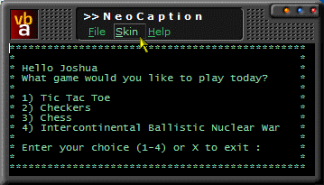
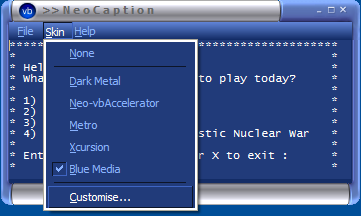
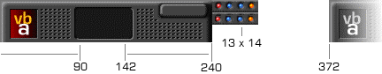
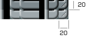

Skins (52K)
Skins (52K)
 VB5 NeoCaption Demonstration (114K)
VB5 NeoCaption Demonstration (114K)
 VB5 NeoCaption DLL (74K)
VB5 NeoCaption DLL (74K)
 VB5 NeoCaption Full Source (239K)
VB5 NeoCaption Full Source (239K)
 VB6 NeoCaption Demonstration (127K)
VB6 NeoCaption Demonstration (127K)
 VB6 NeoCaption DLL (74K)
VB6 NeoCaption DLL (74K)
 VB6 NeoCaption Full Source (253K)
VB6 NeoCaption Full Source (253K)
 Bugs: 3 / 3
Bugs: 3 / 3
 Issues: 1 / 1
Issues: 1 / 1
 Questions: 0 / 0
Questions: 0 / 0
 21 Feb 2002
21 Feb 2002
Release of Version 2.0.
Fixes for support of different sized skinning parts.
New cSkinConfiguration object for setting up the skin, which includes XML serialization and deserialization
Colour customisation using HLS and RGB added.
Transparent colour now added.
Three new skins included.
 Subclassing Without The Crashes
Subclassing Without The Crashes

vbAccelerator NeoCaption Component v2.0
Skin the entire non-client area (titlebar, border, menu, control box and buttons) of your VB project by adding this component to your project
This code sample provides a DLL you can use right away to radically modify the non-client area of a form, similar to the sort of customisation provided by NeoPlanet and WindowBlinds. And, since the full source code is available, you get the chance to build your customised client area derivatives. Sounds like fun? It is!
A Little History
The first program out there I remember which offered any sort of customisation of the non-client area was Office 95, with those gradient caption bars. Although gradient captions aren't so much of interest now MS have rolled support into Win98/2000, they certainly were when Office 95 was launched. Suddenly everyone wanted a go at doing their own captions. How did you do it? And how come you could detach the menu bar in Office 95 - surely you could do this in your own app? After all, how hard could it be?
Well, it turns out that drawing customised menu captions isn't easy at all. Windows just does not play fair - it continually redraws parts of the non-client area such as the Min/Max/Close buttons when you least expect it. Trying to reimplement a menu as a tear-off window whilst still allowing your app respond to Alt-Tab accelerator and the clicks in the Taskbar correctly is even more difficult.
MS weren't very forthcoming on the subject of the Office 95 titlebar. The only Knowledge Base article (Q99046) on the subject coyly skirts around the topic, saying that whilst you could subclass WM_NCPAINT and WM_NCACTIVATE messages and then draw your own caption, it really isn't recommended; the whole idea of modifying the caption bar is foolish and outside the bounds of decent human behaviour (something even this author could agree with during the rash of windows which appeared at the time with primary red to neon blue gradients - very bad when encountered during a hangover).
More interestingly, the Knowledge Base article somehow managed to totally avoid mentioning the fact that the Office implementation only worked at all because it was jam-packed with hacks. So we subclass two messages and do a little additional work afterwards? Yeah, right. Turns out you need to do all sorts of other somewhat abnormal things, such as removing the window style bit WS_VISIBLE during WM_SETCURSOR message processing and then putting it back again straight away afterwards. Anyway, luckily the nicer people at Microsoft Systems Journal (MSJ) and Spy++ help you to understand what you really need to do.
This sample brings together pieces of code from all sources, plus it adds some additional, VB specific workarounds to provide a full method for changing the size of the non-client area, plus drawing whatever you like into that region and providing an override to draw menus in a new style as well (this code is the basis for the vbAccelerator PopMenu2 object).
Note: in the current version, this component does not work properly with MDI forms. When you maximise an MDI child, the system attempts to add new items to the menu for the control box and min/max/close buttons - which is not handled in the current code and causes a crash. A fix for this problem is under investigation.
Version 2.0 Upgrades
Version 2.0 of this component fixes some problems with hardcoding of the skin dimensions in the first release, and also adds some new features. The new features are:
- New cSkinConfiguration object.
This object helps to manage all of the skin properties. This object can save and restore to XML files, making it easier to add customisable skins. - Skin Colour Customisation.
The code includes Image Processing functions allowing you to adjust the overall colour properties of the skin in pretty much realtime: you can either modify the overall Hue and Saturation or change the percentage of Red, Green and Blue components. NeoCaption also now provides a method to preview the skin on screen. - New Skin properties.
In version 2.0 there are a whole range of new skin properties:- Borders can have different bitmaps for the active and inactive window display.
- Borders can be asymmetrical, i.e. the different width to height, and you can configure which part of the border should be treated as the border element and which should be regarded as part of the client.
- Configure whether a title is drawn or not, and choose where to place this relative to the caption area.
- Control buttons can have different bitmaps for the active and inactive window display, and the position relative to the caption area can be customised.
- Transparent Color support.
One of the colours in the bitmaps can be now set as a Transparent Color under Windows 2000 or XP. This colour is untouched when you perform a colour customisation.
The vbAccelerator NeoCaption Component
The DLL supplied with the download exposes three classes for public use:
- cNeoCaption
- cSkinConfiguration
- cNCCalcSize
cNeoCaption is a reference implementation of the Non-Client area modifier, including the drawing code and menuing. It implements the INCAreaModifier interface which must be supported in order to take advantage of the cNCCalcSize class - which is the basic framework for building radically customised non-client areas.
Using the cNeoCaption Interface
This should prove to be quite simple to use. There are basically two methods you will use to initialise the custom caption. Note that although there are a number of options to control colours and fonts, these are now deprecated and the cSkinConfiguration object should be used instead.
- Attach2
Starts the NeoCaption processing, and sets the skin to use. - Detach
Ends NeoCaption processing. The form is set back to its standard state.
Using the cSkinConfiguration Object
The cSkinConfiguration object is where you do all of the work in setting up the Skin to draw. First we look at configuring the skin pictures.
NeoCaption draws the interface using two bitmaps: a caption bitmap and a border bitmap. These bitmaps have to be drawn in a specific way and NeoCaption told about the positions of each of the subcomponents within the bitmap in order for the skin to draw correctly.
The Caption Bitmap
The caption bitmap contains the images drawn to create the title bar and menu areas of the form. In this bitmap you need images for the active title bar and the inactive one, as well as images for each of the control buttons when they are up and down.
Caption Bitmap Example
Using the example above, you then need to tell NeoCaption about each of the details:
With cSkin
' picCaption is StdPicture object containing the
' caption bitmap:
Set .Caption = picCaption
.ActiveLeftEnd = 90
.ActiveRightStart = 142
.ActiveRightEnd = 240
.InactiveOffset = 372
.ButtonWidth = 13
.ButtonHeight = 14
' Note that you can also have inactive
' versions of the control buttons; these would
' be drawn at the end of the inactive version
' of the caption.
.ControlButtonHasInactiveVersion = False
End With
The Borders Bitmap
The border picture consists of seven square images in-line which represent 1 x left hand border, 2 x bottom-left corner, 1 x bottom border, 1 x right hand border and finally 2 x bottom-right corner. The first of the two corners is used to when the form is sizable; the second of the two corners when it has a fixed border. You can optionally have a second line of border images to use when the form is inactive as well:
Borders Bitmap Example
This is how you would configure the skin for this border example:
With cSkin
' picBorders is StdPicture object containing the
' borders bitmap:
Set .Caption = picBorders
' We have both an active and inactive border:
.BorderHasInactiveVersion = True
' NeoCaption will automatically configure the border size
' of 20 x 20 from the bitmap, however, we can tell it that
' the actual border portions are smaller than this:
.LeftBorderWidth = 8
.RightBorderWidth = 8
.BottomSizingBorderHeight = 4
.TopSizingBorderHeight = 4
End With
Other Settings
There are various other settings you can use to customise how NeoCaption draws, as follows:
- ActiveCaptionColor, InActiveCaptionColor, CaptionFont
Specify the colour and font used to draw the form's caption. - ActiveMenuColor, ActiveMenuColorOver, InActiveMenuColor, MenuBackgroundColor, MenuFont
Specify the colours and fonts used to draw the menu. - DrawTitle
Tells NeoCaption whether to draw the title in the area between ActiveLeftEnd and ActiveRightStart or not. The default is to draw the title. - TitleStartOffsetY
By default NeoCaption will place the title starting at x = ActiveLeftEnd and y = TopSizingBorderHeight (or the dimension of a border if that isn't set). If you set these properties then the drawing position of the title will be offset by the specified amounts. - MenuStartOffsetX, MenuStartOffsetY
By default NeoCaption will draw the menu starting at x = ActiveLeftEnd and y = (title position) + (title height). These properties allow you to set the exact position of the menu relative to the Top-Left of the form. - CustomControlButtonPosition, ControlButtonOffsetX, ControlButtonOffsetY
By default NeoCaption places the buttons at x = ActiveRightEnd - RightBorderWidth. Setting these properties allow you to adjust the control position relative to the top-right of the form. - Colourise, Hue, Saturation
If you set Colourise to True then NeoCaption will adjust the bitmap to the specified Hue and Saturation. Hue values run from -1 to 5; this corresponds to the colours range Purple-Red-Yellow-Green-Blue-Purple. Saturation values run from 0 (totally unsaturated, or grey) to 1 (totally saturated). - AdjustRGB, PercentRed, PercentGreen, PercentBlue
If you set AdjustRGB then NeoCaption will adjust the colours in the bitmap according to the percentages provided. Percentages between -100% (-1) and 100% (1) can be set for each. - TransparentColor
The colour you'd like to be set Transparent on the form. Only valid for Windows 2000/XP. Note that the drawing performance is poor when resizing with Transparency set on. Set to -1 if you don't want transparency (the default). - Name
The name of your skin.
cSkinConfiguration Methods
You can also use cSkinConfiguration to draw a sample of the specified skin and to Load and Save skin configuration details to an XML file.
- Store
Returns an string containing the skin configuration as XML. Note that the XML does not include the actual pictures; you need to save them elsewhere. To save the skin configuration to a file, use an MSXML DomDocument:Dim d as New DomDocument d.LoadXML cSkin.Store() d.Save App.Path " "\MySkin.xml" - Restore
Initialises the cSkinConfiguration object from the specified XML and the Caption and Borders picture objects. To get the XML, you should use a DomDocument:Dim d as New DomDocument d.Load App.Path " "\MySkin.xml" cSkin.Restore d.xml, picCaption, picBorders - DrawSample
Draws an image of the skin currently in the cSkinConfiguration object onto the specified window, DC and at the specified position.
Demonstration
The sample provided in the demonstration download show how to use the NeoCaption component to swap different skins at runtime and even how to remove a skin from a form. It also provides a reusable skin customisation form for performing colourisation.
Currently the demonstration does not use XML to configure the skins, but is easy to add. The Skins.zip download contains all of the skins used in the sample as XML files along with the original bitmaps.
Using the cNCCalcSize Object
To gain lower level control over non-client area processing, you can implement the INCAreaModifier interface and attach directly to the cNCCalcSize object. Implementing the INCAreaModifier interface involves doing the following:
- Returning Specific Values
When the GetTopMarginHeight, GetLeftMarginWidth, GetRightMarginWidth and GetBottomMarginHeight methods are called, you get the opportunity to modify the border sizes and titlebar height to suit your own graphics. The hWnd property is queried when the cNCCalcSize object needs to know the handle of the window you want to modify the non-client area for. - Performing NonClient Painting
The NCPaint method is fired whenever you need to paint the Non-Client area. The method passes the size of the window and also a valid device context to paint into. - Assigning Window Areas to their non-client function
The HitTest method is called whenever Windows wants to know what function the area under the mouse should perform (e.g. is it the control menu, a border, titlebar, one of the min/max/close buttons etc). The caller assigns a default value for the function based on the x,y position but you can override this with the type of region you want. - Non-Client MouseDown and MouseUp processing
In customising the response to the HitTest method, you may also wish to customise how your application reacts to non-client mouse clicks. The NCMouseDown and NCMouseUp methods allow you to perform your own actions. - Menu Processing
The InitMenuPopup and AltKeyAccelerator methods enable your application to integrate customised menu painting into the non-client area (you would want to ignore these methods if menuing was being performed by a separate method, for example, using the vbAccelerator CoolMenu control).
Implementing these functions from scratch is quite a lot of effort. If you want to do it, the best place to start is to examine how the cNeoCaption class works.